Lemuel Ifuwe
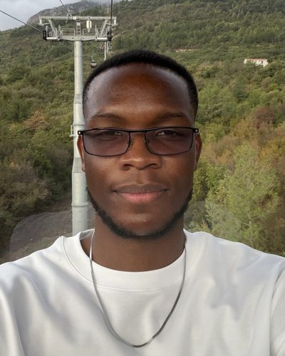
I'm an AI engineer with hands-on expertise in robotics: ROS 2, autonomous underwater vehicles, embedded systems and MLOps. I recently graduated from Sheffield Hallam University, where I still do AI research: deep-learning models for sleep staging and audio, and the electronics and ROS 2 software for a low-cost autonomous underwater vehicle. On its first recorded autonomous run it covered 36.8 m to within 3 m of its target, then stopped itself and surfaced, on £777 of parts. In March 2026 I was a speaker for the Africa Deep Tech Community, where I took apart how to architect a real-world AUV, from edge computing to ROS 2 on the vehicle.
My MSc is in Automation, Control and Robotics Engineering. Before that I studied Information and Communication Engineering at Covenant University, designed PCBs at NodeX iHub, led an automation team at Huawei, and co-founded an ed-tech startup that piloted with more than 1,000 users.
Research
Papers, published and on the way
-
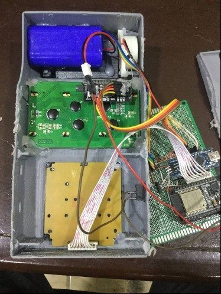
Development of a Hybrid Near Field Communication Payment System for a Closed Community
E. C. Anyiam, A. U. Adoghe, I. L. Ossai, I. Samuel, K. Okokpujie
PublishedIEEE ICMEAS, 2023
A tap-to-pay device that clears payments offline on the card and syncs over Wi-Fi. I built the hardware (PCB, ATmega328P, ESP-12E, PN532 NFC reader), the firmware and the apps.
-
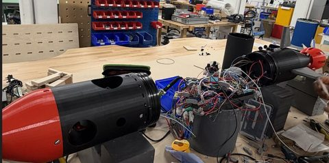
A Safety-First ROS 2 Architecture for Waypoint Navigation on a Low-Cost AUV
L. O. Ifuwe and collaborators
In preparationTarget: OCEANS 2027
One arbitrated command path, staleness rejection, a heartbeat watchdog and a fail-to-surface safe state. Validated in open water; now moving to a new vehicle design.
-
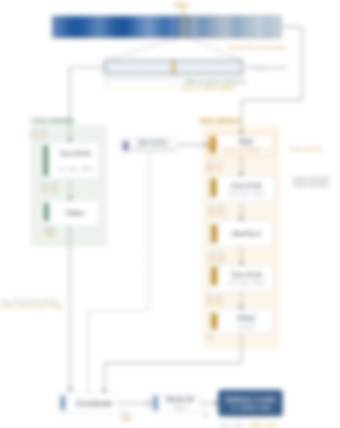
Real-Time-Capable Sleep Staging from Wrist Signals with a Dual-Resolution Convolutional Network
L. O. Ifuwe, H. Razaghi
In preparationSheffield Hallam University
A ~130k-parameter CNN that pairs a 30-minute window with a coarse summary of the night so far. Run fully in real time it reaches κ 0.648 (3-class) on MESA, above the strongest published offline systems on the same wrist inputs.
-
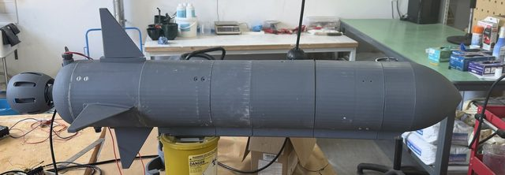
Electronics and ROS 2 Software Architecture for Waypoint Navigation on a Low-Cost, Torpedo-Form AUV
2026L. O. Ifuwe
CompletedMSc dissertation, Sheffield Hallam University
Heading held to 3.5° mean absolute error and depth to 0.600 ± 0.011 m over an 1,103 s autonomous mission.
Projects
Robots, models and pipelines
-
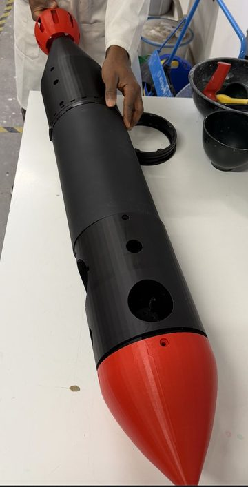
ROS 2 packages for a single-thruster, fin-steered AUV: safety supervisor, command mixer, LOS guidance, depth and heading PID, sensor drivers. Every tunable lives in YAML, so the same code runs on the bench and in the water.
ROS 2 · Python · Raspberry Pi 4 · Pixhawk · PCA9685 · Blue Robotics T200
-
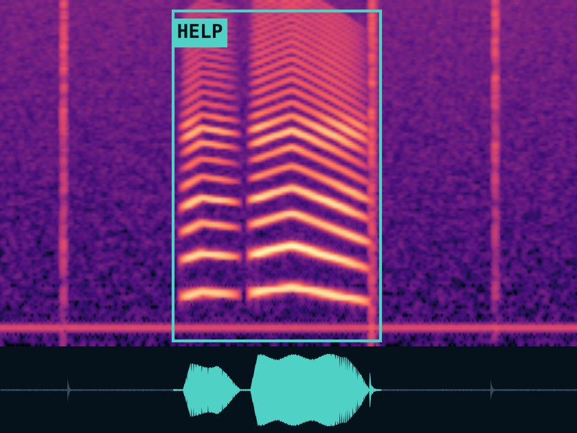
A CNN that classifies a short clip as help or not help. Self-recorded clips become 128×128 mel-spectrograms, augmented five ways (840 → 4,200 samples). 99.5% accuracy and F1 0.995 on 840 test clips.
Python · Keras · librosa · CNN
-
Support assistant
A ticket classifier plus a retrieval-augmented answerer, built end to end as an ML engineering project on Azure.
Python · RAG · Azure · Jupyter
-
Turbofan remaining useful life
Predicting how many cycles a turbofan engine has left from its sensor history.
Python · predictive maintenance · time series
-
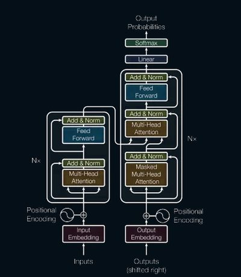
LectureMate AI
2023 – 2024Co-founded an ed-tech platform with AI quiz generation and note summaries, piloted by more than 1,000 users. My NLP tagging pipeline cut manual labelling by 70% and raised quiz success by 22%.
Python · NLP · Transformers · product
Code not public
-
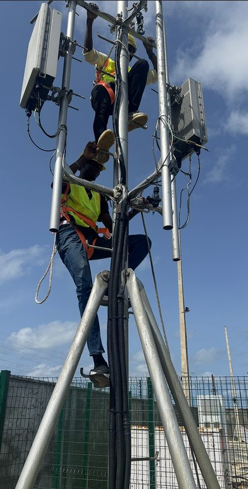
Cell-tower anomaly detection
2024Isolation Forest plus rules on MTN tower operations data at Huawei: 30% fewer false positives, inside an automation pipeline that made decommission analysis 45% faster.
Python · scikit-learn · anomaly detection
Proprietary
Talks & writing
Explaining what I build and what I read
-
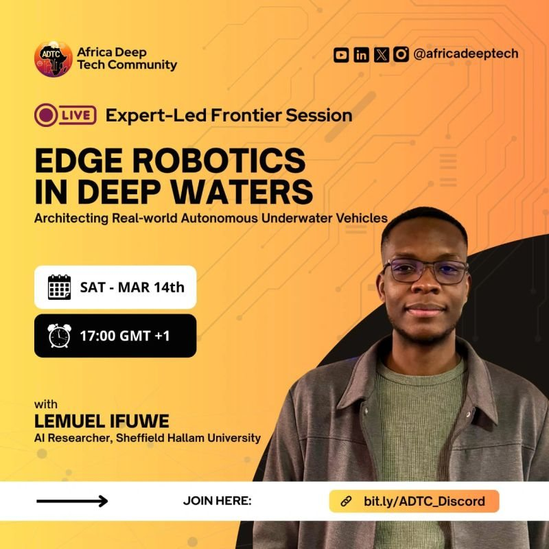
TalkAfrica Deep Tech Community, Expert-Led Frontier Session, online
A technical teardown of building a real AUV: splitting work between a single-board computer and microcontrollers, ROS 2 node and topic design for real hardware, and the sim-to-real constraints of marine robotics.
-
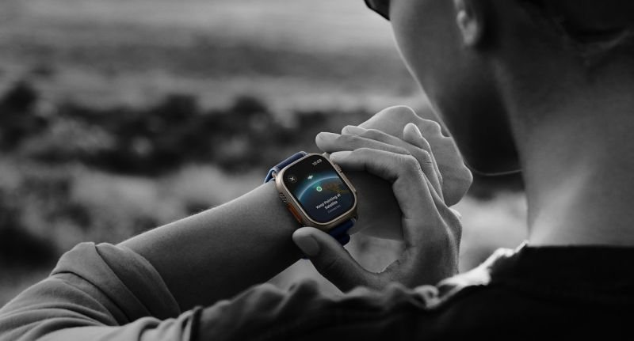
Did Apple Health lie?
21 Feb 2026PostLinkedIn
Wearables are strong at sleep versus wake and weaker at staging. A medtech model should be judged on whether it is fit for its intended use, not on whether it is perfect.
Experience
Work and study, newest first
-
Mar 2026 – Present
AI Researcher and Autonomous Systems Engineer (volunteer research), Sheffield Hallam University.
- Sleep staging from clinical EEG/EOG through to wrist wearables; my real-time model beats the published offline systems on MESA.
- Audio distress detection with spectrograms and CNNs, for older people living alone.
- Lead on AUV electronics and ROS 2 software: power, actuation, safety supervisor, waypoint navigation.
-
Sep 2025 – Sep 2026
MSc Automation, Control and Robotics Engineering, Sheffield Hallam University. Dissertation on the AUV's electronics and ROS 2 architecture.
-
May 2025 – Sep 2025
Data Scientist, Royal Iwere Foundation (remote). A Python reporting pipeline that cut manual processing by 40%, and Looker Studio dashboards used in grant applications.
-
Nov 2023 – Nov 2024
Systems Integration Consultant, Huawei, Lagos. Led the team behind an automation pipeline for MTN cell-tower decommission analysis (45% faster delivery) and built anomaly detection that cut false positives by 30%.
-
Apr 2023 – Mar 2024
Lm
Co-founder and Startup Engineer, LectureMate AI. AI quizzes and summaries piloted by 1,000+ users; NLP tagging that removed 70% of manual labelling.
-
Jul 2022 – Apr 2023
IT Consultant, data science and embedded systems, NodeX iHub. Designed analogue and digital circuits and PCBs, and took client products from design to production.
-
Jun 2022 – Jul 2023
S
Machine Learning for Production Specialization, Stanford University (online).
-
2018 – 2023
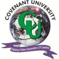
BEng Information and Communication Engineering, Covenant University. My final-year project became the IEEE NFC payment paper.
Skills
What I reach for
- Machine learning
- TensorFlow / Keras · PyTorch · scikit-learn · CNNs · NLP · RAG · anomaly detection
- Signals
- EEG / EOG · actigraphy and heart rate · audio and mel-spectrograms · time series
- Robotics
- ROS 2 · LOS guidance · PID control · ArduPilot / ArduSub · MAVLink · GPS navigation
- Hardware
- Raspberry Pi 4 · Jetson Orin Nano Super · Pixhawk · ATmega328P · ESP8266 · PCB design · I²C, PWM, UART
- Languages
- Python · MATLAB · C/C++ for embedded
- MLOps and data
- MLflow · Azure · Git · Looker Studio